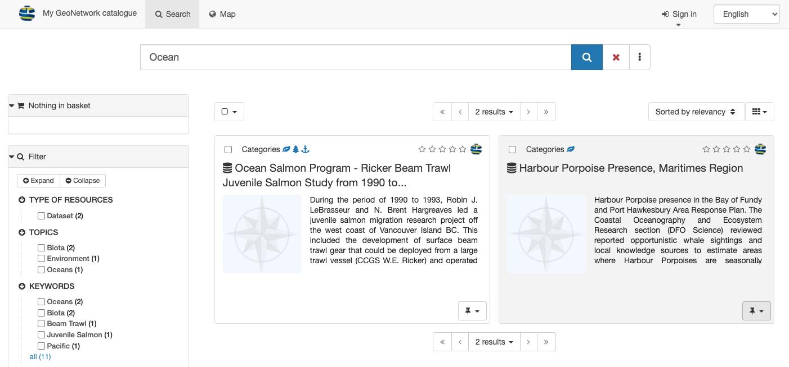
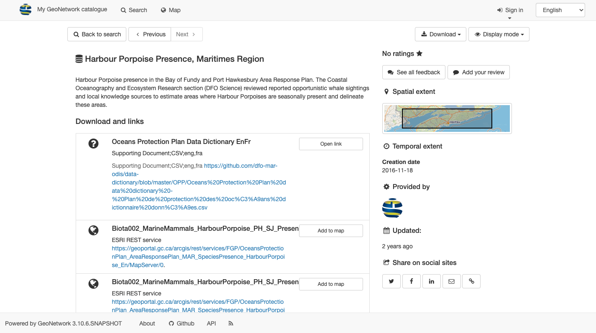
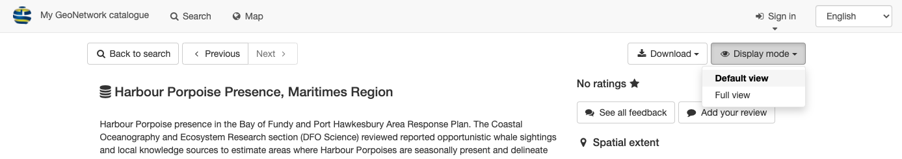
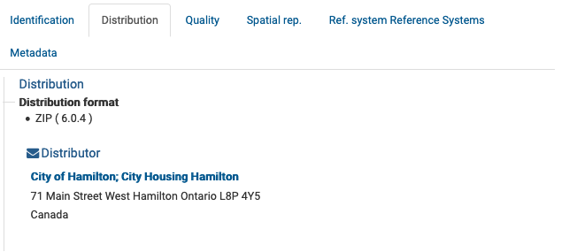
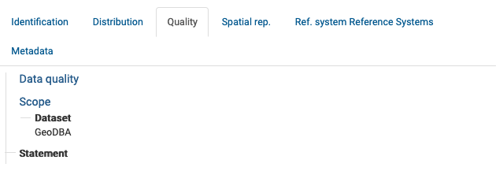

View Record¶
View record contents to discovering more in depth details about record and the dataset described.
Locate record to view:
Use search field Ocean.
Locate the record with title Ocean, and click on the record to view.
The background of the record will change to gray when your mouse is over the Accommodations record.
Search Ocean¶
The record contents are displayed, using the initial Default View display mode.
Accomidations default view¶
Record actions for viewing and download:
Next and Previous buttons used to review search results.
Download used to export record as
ZIP,XMLorPDFThe Display mode drop-down to change between Default View and Full View covered in the next section.

Record actions¶
Default View¶
The Default view, provides a quick summary of record contents:
Use Display mode to change to Default view.
Change display mode to default view¶
Record title and description are shown at the top of the page.

Record description¶
About this resource provides information on the contents, such as topic category.

About this resource¶
Technical information provides details such data format.

Technical information¶
Metadata information provides a button to download the XML record, contact information, and the unique identifier.

Metadata information¶
On the right hand side:
Spatial extent is shown visually on a map
Information on updates and feedback.
Accomidations default view¶
Full View¶
The Full view is used to show complete record contents.
Use Display mode to change to Full view.
The advanced view divides the record up into a number of tabs:
Identification
Distribution
Quality
Spatial Representation
Reference Systems
Metadata
The Identification tab provides:
The Distribution tab has details on how the content can be accessed.
Data distribution details¶
The Quality tab lists data quality information.
Data quality details¶
The Spatial rep. tab provides a summary of the spatial representation.

Spatial representation details¶
The Reference System tab covers information on the spatial reference system used.
This is provided as a machine readable http://www.opengis.net/def/crs/EPSG/0/26917 reference to the NAD83 / UTM zone 17N reference system.
The Metadata tab covers the unique File Identifier, providing a link to view the XML document, along with point of contact information for the record.

Record metadata details¶


XML Record¶
The XML record can be shown:
Default View metadata heading provides a Download metadata button.
Default view download metadata¶
Full View metadata tab provides a link to XML.

Full view download metadata¶
The XML file is downloaded, or shown directly in your browser.

XML download shown in FireFox¶
Keep in mind XML record does not include any attached documents or thumbnails.
To download complete record information see the Download record section.